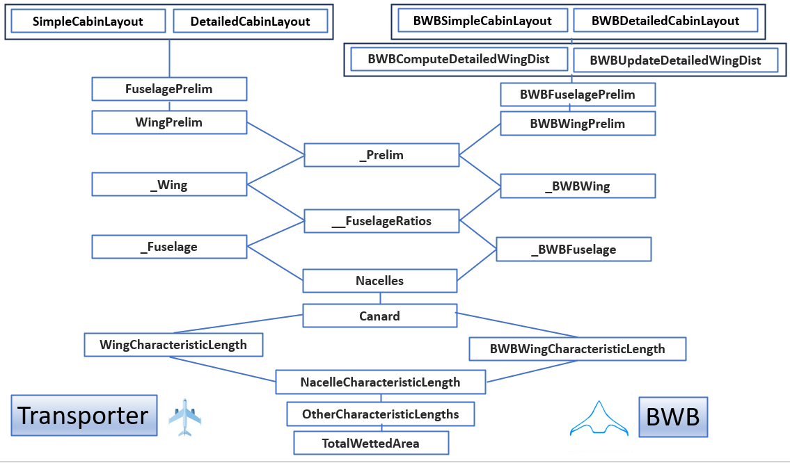

FLOPS Based Blended Wing Body Modeling#
The blended wing body aircraft is modeled following the FLOPS implementation. It is important to point out that the Aviary implementation is limited to certain assumptions. To model a special model, the user must read this document carefully to see it is within the scope of the Aviary implementation.
FLOPS Based Geometry#
The FLOPS based geometry subsystems are shown in the following table. The left column is for the conventional aircraft and the right column is for BWB aircraft. In both case, users can choose a simple layout or a detailed layout.
Comparision of Conventional Aircraft and BWB Aircraft
Tube+Wing |
BWB |
|---|---|
|
|
|
|
|
|
|
|
|
|
|
|
|
|
|
|
|
|
|
|
|
|
|
|
|
|
|
|
|
|
As we see in the above table, some geometrical components have no special code in the BWB case (e.g. Nacelles and _Tail). So, the new implementation of BWB geometry uses the same components in conventional aircraft.
Comparing to traditional tube and wing model, Blended wing body (BWB) modeling has two major new changes in geometry subsystems:
Wings always have detailed wing data,
Fuselage layout is computed using a special algorithm.
We will explain some details of each feature in this document.
Fuselage Layout#
There are two options: simple layout and detailed layout. For simple layout, you are given fuselage length, width and leading edge angle (as well as the rear spar percent chord at fuselage centerline, default to 70%), Aviary computes passenger compartment length, wing root chord, cabin area. This is shown in the following image:

Variable Rear_spar_percent_chord serves as the ratio of fuselage length and compartment length. It says that the rear spar is mounted at the side of fuselage which is 70% (default) of fuselage length from the leading edge. Rear_spar_percent_chord is hard coded for now, but can be easily converted to an Aviary variable.
The detailed layout involves more details like the number of passengers, seat pitch and seat abreast. Fuselage length and width are no longer inputs but outputs. If you have those data, it is a better choice.
For BWB, there is a new concept: the number of passenger cabin bays (or Aircraft.BWB.NUM_BAYS). It is a discrete, pressurized structural compartment within the BWB center body that contains passenger seating and is bounded by primary load-carrying frames, ribs, and pressure bulkheads. In Aviary, we determine the number of bays as how many blocks can be fit within the fuselage cabin width, assuming each block has a 12-foot width (hard coded). Note that it is not a layout term and bays are not separated by aisles even though the number of bays is computed here in fuselage layout components. The following is an example of six bays.

Finally, fuselage height is computed from the width and height-to-width ratio.
To choose detailed layout or simple layout, the user can set up a flag Aircraft.Fuselage.SIMPLE_LAYOUT. If it is true, Aviary assumes a simple layout. Otherwise, it is a detailed layout.
Wings#
Detailed Wings#
For the BWB, the wing weight is always calculated with detailed wing geometry. The wing station distribution is either given (BWBUpdateDetailedWingDist) or created (BWBComputeDetailedWingDist). This means that number of input wing stations is always positive. If input wing stations are not provided, FLOPS adds three points. We call this case the simple wing case. Otherwise, we say that we have a detailed wing case.
Let’s assume the detailed wing data is given. That means we are given the following arrays:
Aircraft.Wing.INPUT_STATION_DISTAircraft.Wing.CHORD_PER_SEMISPAN_DISTAircraft.Wing.THICKNESS_TO_CHORD_DISTAircraft.Wing.LOAD_PATH_SWEEP_DIST
These data are used to define an outboard wing panel to be added to the side of the cabin. In FLOPS, data start from the wing root to the wing tip. For transporter aircraft, it is good enough. But for BWB aircraft, we need to add one additional wing station at the body centerline. So, if you obtain the data from a FLOPS data set. You need to add one entry at the beginning of the lists.
Aircraft.Wing.INPUT_STATION_DIST is the input station distribution (an Aviary option). Each entry is a location of an input station, either as a fraction from wing root to wing tip (when value < 1.0), or the absolute location. If you obtain the data from a FLOPS input data, add a 0.0 at the beginning.
Aircraft.Wing.CHORD_PER_SEMISPAN_DIST is the chord length, either as a fraction of semispan or actual chord. If you obtain the data from a FLOPS input data, add a -1.0 at the beginning. It will be updated during the run.
Aircraft.Wing.THICKNESS_TO_CHORD_DIST is the thickness to chord ratios at the input station distribution. If you obtain the data from a FLOPS input data, add a -1.0 at the beginning. It will be updated during the run.
Aircraft.Wing.LOAD_PATH_SWEEP_DIST is the load path sweep angle between two adjacent input station. f you obtain the data from a FLOPS input data, add a 0.0 at the beginning. Note that this list should have one fewer entry than the other three lists.
When Aviary runs, Aircraft.Wing.CHORD_PER_SEMISPAN_DIST, Aircraft.Wing.THICKNESS_TO_CHORD_DIST, and Aircraft.Wing.LOAD_PATH_SWEEP_DIST are updated and output to local variabls BWB_THICKNESS_TO_CHORD_DIST, BWB_THICKNESS_TO_CHORD_DIST, and BWB_LOAD_PATH_SWEEP_DIST.
Simple Wings#
Keep in mind that the BWB aircraft always have detailed wings, but users do not have to provide the data as above. In this case, the user should provide (0.0, 0.5, 1.0) as Aircraft.Wing.INPUT_STATION_DIST. Here, Aircraft.Wing.INPUT_STATION_DIST[0] = 0.0 means that the first station is at the fuselage center line （at 0.0%). Aircraft.Wing.INPUT_STATION_DIST[2] = 1.0 means that the last station is at the tip (namely 100% place). Aircraft.Wing.INPUT_STATION_DIST[1] = 0.5 is a temporary place holder. When Aviary runs, Aircraft.Wing.INPUT_STATION_DIST[1] is updated to the location of root chord (note that this is the actual location, not the percentage). The same three local variables BWB_THICKNESS_TO_CHORD_DIST (dimension 3), BWB_THICKNESS_TO_CHORD_DIST (dimension 3), and BWB_LOAD_PATH_SWEEP_DIST (dimension 2) are updated accordingly. See BWBComputeDetailedWingDist component for details.
Fuselage and Wing#
As summary, the geometry subsystem for BWB aircraft is very similar to that of transporter aircraft. See the diagram below:

To choose between simple fuselage layout or detailed fuselage layout, the user sets Aircraft.Fuselage.SIMPLE_LAYOUT to True or False. For BWB, to choose between providing detailed wing or letting Aviary to create a detailed wing, the user sets Aircraft.BWB.DETAILED_WING_PROVIDED to True or False.
Comparing the two cases （transporter and BWB), we see that BWBComputeDetailedWingDist and BWBUpdateDetailedWingDist are new. This is because we must update Aircraft.Wing.CHORD_PER_SEMISPAN_DIST, Aircraft.Wing.THICKNESS_TO_CHORD_DIST, and Aircraft.Wing.LOAD_PATH_SWEEP_DIST in the case of BWB.
This feature is explained in the following diagram (in the case of detailed wing provided):

Fuselage Cross Section and Wetted Area#
Because of the nature of blended wing body, we ignore the fuselage wetted area. There, both Aircraft.Fuselage.CROSS_SECTION and Aircraft.Fuselage.WETTED_AREA are set to 0.0.
This is implemented in _BWBFuselage.
Characteristics#
The FLOPS based BWB aircraft does not have horizontal and vertical tails. Once again ,we simply set both Aircraft.HorizontalTail.CHARACTERISTIC_LENGTH and Aircraft.VerticalTail.CHARACTERISTIC_LENGTH to 0.0.
This is because the FLOPS algorithm does not apply to non-horizontal and non-vertical tails scenarios. If users want to add them, their mass equations must be provided separately. See HorizontalTailCharacteristicLength and VerticalTailCharacteristicLength classes for details.
FLOPS Based Mass#
Aviary computes masses of indiviual components and then sum them up. For BWB aircrafts, most of them share the same code with transporters. There are a few exceptions, however. They are:
BWBFurnishingsGroupMass(computation ofAircraft.Furnishings.MASS)BWBFuselageMass(computation ofAircraft.Fuselage.MASS)BWBAftBodyMass(computation ofAircraft.Wing.BWB_AFTBODY_MASS)BWBWingMiscMass(computation ofAircraft.Wing.MISC_MASS)BWBDetailedWingBendingFact(computation ofAircraft.Wing.BENDING_MATERIAL_FACTOR)
Here, BWBAftBodyMass is a new component for BWB. This area starts from the rear span and backward.
Because the wing is always a detailed wing for BWB aircraft, we must compute the wing bending material factor with sweep adjustment. This is done in BWBDetailedWingBendingFact.
FLOPS Based Aerodynamics#
There is no special implementation of aerodynamics subsystem in FLOPS. It is likely that users need to provide their own aero tables for their design.